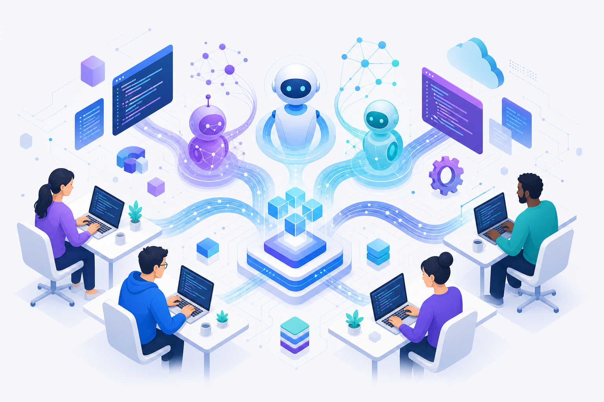

生成 AI 应用于开发的全体像 生成 AI 開発活用の全体像 The Big Picture of Generative AI in Development
从「怎么用 LLM」到「怎么定制 AI 工具」，再到「开发模式正在如何改变」——一条线讲清生成 AI 在开发与生产中的变迁、挑战与机遇。 「LLM の使い方」から「AI ツールのカスタマイズ」、そして「開発スタイルの変化」まで。生成 AI が開発・生産にもたらす変遷・課題・機会を一本の線で整理します。 From "how to use an LLM" to "how to customize AI tools" to "how development itself is changing" — one throughline covering the shift, the challenges, and the opportunities.

面向 IT 从业人员 · 适合初学者与有经验者 · 可自学浏览，也可直接用于演讲（点右上「演讲模式」）。 IT 従事者向け · 初心者にも経験者にも · 自習にも、右上の「プレゼンモード」で講演にも。 For IT practitioners, beginner to experienced. Read it yourself, or hit "Present mode" (top-right) to give the talk.
整体地图：三步看懂全体マップ：3 ステップThe Map: Three Steps
本站沿着一条主线展开——先看「人怎么用 AI」，再看「怎么把 AI 工具调教成趁手的工具」，最后看「这一切如何重塑开发本身」。 本サイトは一本の流れで構成されます——まず「人が AI をどう使うか」、次に「AI ツールをどう仕込むか」、最後に「それが開発そのものをどう変えるか」。 A single throughline: how people use AI, then how to shape AI tools into something dependable, then how all of it reshapes development itself.
Chat · API · Agent · CLI · IDE"]:::a B["② Customize & Standards
Rules · Skills · Hooks · MCP/A2A · Harness"]:::b C["③ Shift & Outlook
Spec-driven · AgentOps · New roles"]:::c A --> B --> C classDef a stroke:#5b8cff,stroke-width:2px; classDef b stroke:#b07bff,stroke-width:2px; classDef c stroke:#2bd4d4,stroke-width:2px;
三大部分3 つの章Three Parts
LLM 的基础应用方式LLM の基本的な活用方法Ways to Use LLMs
Chat、API（含内置功能）、Agent、CLI、IDE 集成、持久化助手——六种形态与取舍。Chat、API（組込み機能含む）、Agent、CLI、IDE 統合、常駐アシスタント——6 形態と使い分け。Chat, API (with built-in tools), Agent, CLI, IDE integration, persistent assistants — six modes and trade-offs.
PART 2定制与标准组成カスタマイズと標準構成Customization & Standards
通用概念：rule、skill、command、hook、agent、MCP/A2A/ACP 协议，以及 Harness。汎用概念：rule、skill、command、hook、agent、MCP/A2A/ACP プロトコル、そして Harness。Generic concepts: rule, skill, command, hook, agent, MCP/A2A/ACP protocols, and the Harness.
PART 3开发模式的改变与展望開発スタイルの変化と展望Shift & Outlook
从 vibe coding 到规格驱动，Harness 工程、AgentOps，以及挑战与机遇。vibe coding から仕様駆動へ。Harness エンジニアリング、AgentOps、課題と機会。From vibe coding to spec-driven development, harness engineering, AgentOps, challenges and opportunities.
按经验选择路径経験に応じたルートPick a Path by Experience
初入门はじめての方Newcomer
从 Part 1 的 Chat / API / IDE 入手，跟着模拟 demo 建立直觉；先理解「人怎么用 AI」，暂时跳过协议细节。Part 1 の Chat / API / IDE から。デモで感覚を掴み、まず「人が AI をどう使うか」を理解。プロトコルの詳細は後回しで OK。Start with Chat / API / IDE in Part 1, build intuition via the demos. Understand "how people use AI" first; skip protocol details for now.
有经验者経験者の方Experienced
直接看 Part 1 的 Agent 内部细节与前沿小节，重点研读 Part 2 的 Harness 与 MCP/A2A/ACP，以及 Part 3 的规格驱动与 Harness 工程。Part 1 の Agent 内部・最前線、Part 2 の Harness と MCP/A2A/ACP、Part 3 の仕様駆動と Harness エンジニアリングを重点的に。Jump to the agent internals and frontier notes in Part 1, study the Harness and MCP/A2A/ACP in Part 2, and spec-driven + harness engineering in Part 3.